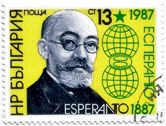

Powstanie esperanta jest dziełem Ludwika Zamenhofa , polsko-żydowskiego lekarza okulisty urodzonego w Białymstoku.
Dzieciństwo spędzone w tym wielokulturowym mieście było dla niego okazją do obserwowania nieprzyjaznych stosunków pomiędzy przedstawicielami zamieszkujących je narodów: Rosjanami, Polakami, Niemcami i Żydami.
Za główną przyczynę konfliktów Zamenhof uznał brak wspólnego języka, dlatego też już jako uczeń rozpoczął prace nad projektem nowego języka wspólnego dla wszystkich ludzi. W przeciwieństwie do języków narodowych miał to być w jego zamyśle język neutralny i łatwy do nauczenia, tak aby mógł być przyjęty przez wszystkich jako drugi język, nauczany równolegle do języka narodowego i używany w sytuacjach wymagających międzynarodowego porozumienia.
Esperanto jest dziś w pełni rozwiniętym językiem z tysiącami użytkowników na całym świecie i dużą liczbą wydawnictw. Do znanych na świecie esperantystów należą noblista w dziedzinie ekonomii Reinhard Selten, mistrzyni świata w szachach Zsuzsa Polgár czy Tivadar Soros, ojciec finansisty George'a Sorosa.
Niektóre uczelnie wyższe włączają esperanto do programów studiów lingwistycznych, inne oferują naukę esperanta jako osobny przedmiot. Na Uniwersytecie Adama Mickiewicza w Poznaniu prowadzone są 3-letnie studia na kierunku interlingwistyka skupiające się na esperancie i używające go jako języka wykładowego.